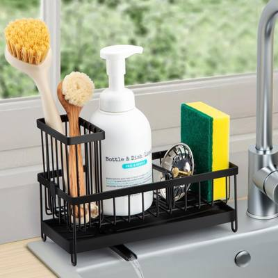

Togli tutto, misura, carrelli e vassoi: il sottolavello smette di essere un buco nero.
Il sottolavello è il posto più caotico della casa perché ci finisce tutto quello che non ha un posto. Si sistema con cinque mosse e due accessori giusti.
Svuota completamente, butta i flaconi finiti e i doppioni aperti da mesi. Quello che resta è meno della metà: già un risultato.
Altezza, larghezza e profondità col metro, tenendo conto dei tubi. Senza misure compri organizer che non entrano: è l'errore più comune.
Un carrellino stretto o un vassoio con manico trasforma il buco in un cassetto estraibile. Detersivi da un lato, spugne e sacchi dall'altro.
Se c'è un ripiano o un'anta interna, lassù vanno le scorte chiuse. Sotto il lavandino resta solo quello che usi ogni settimana.
Due etichette bastano: "pulizia" e "scorte". Chiunque in casa rimette le cose al posto giusto senza chiederti niente.
